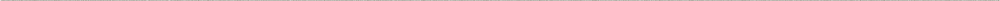

- resume Download
- 010.8784.9439
- mwwwg@naver.com
- _wigeonmoon
Moon
wigeon
2025
portfolioUI · UX Design


scroll

moondance
Noto sans (KR)
- Profile
- Works
- Additional
문위건
Wigeon Moon
-
Birth
1998. 01. 20
-
Phone
010. 8784. 9439
-
E-mail
mwwwg@naver.com
-
insta
wigeonmoon
-
Kakao

education
- - 안양 신성고등학교
- 2013. 03 ~ 2016. 02
- - 서울과학기술대학교 금속공예디자인학과
- 2016. 03 ~ 2022. 08
- - 부산 IT교육센터 UX/UI 앱,웹디자인 과정
- 2025. 02 ~ 2025. 08
Activity
- - 서울과학기술대학교 금속공예디자인 졸업전시
- 作 - 잔, 불
- - 기업 실무프로젝트 멘토링
- TOURZY, SCT
Skills
- HTML
- CSS
- jQuery
- React
- Ps
- Ai
- Figma
- Github
Certificate
- - 웹디자인 개발 기능사
- 2025. 07
- - 운전면허 2종 보통
- 2016. 08
Back
- SAMSUNG
- 29CM
- tourzy
- STORi
- Lifemind
-

SAMSUNG
LinkCI re-design
-
Info
개인 프로젝트 - 100% 삼성은 현재 메인 CI가 시대의 흐름에 따라 쇠퇴하여 사용하기 어렵게 되자, 로고 자체를 드러내지 않는 쪽으로 디자인 방향을 잡고 있습니다. 이에 미니멀한 조형미를 추구하는 현재의 디자인 트렌드에 맞추어 Ci리뉴얼 작업을 진행했습니다.
-
Font
더잠실
Pretendard -
Color
-
#3F519D
-
#333333
-
#000000
-
-
Tools
jQery (반응형)
-
-
29CM
LinkWeb re-design
-
Info
개인 프로젝트 - 100% 온라인 패션 셀랙트 샵 29cm의 홈페이지 리디자인&퍼블리싱 작업을 진행했습니다. 기존의 미니멀한 디자인에 색감을 가미한 색션들을 삽입하여, 가시성에 강약을 주려는 시도를 적용했습니다.
-
Font
Pretendard
-
Color
-
#000000
-
#FFFFFF
-
#FAB951
-
#FF694E
-
-
Tools
React (반응형)
-
-
tourzy
LinkLanding Page
-
Info
팀 프로젝트 - 30% 전기차&자전거 모빌리티 플렛폼 tourzy의 리뉴얼 프로젝트를 진행했습니다.
기존 앱이 시각적 완성도, 정보구조, 사용자경험 측면에서 미흡한 요소들이 많았기에, 전면 리디자인 및 기능 보완을 위한 작업을 진행했습니다. -
Font
Pretendard
-
Color
-
#E88138
-
#333333
-
#FFFFFF
-
-
Tools
Jqery - full page (반응형)
-
-
STORi
LinkApp + Intro Page
-
Info
개인 프로젝트 - 100% 독서추천 앱의 와이어프레임과 디자인시안 제작 작업을 진행했습니다.
STORi는 새로운 독자들을 유인할 요소 뿐 아니라, 기존의 매니악한/전문적인 독자층들의 수요 또한 충족시킬 수 있는 다양한 도서관련 서비스를 제공하는 플랫폼으로 기획했습니다. -
Font
Pretendard
-
Color
-
#6C73F4
-
#A0CB68
-
#333333
-
#EDEDED
-
-
Tools
Figma
-
-
SCT - Lifemind
LinkApp advancement
-
Info
팀 프로젝트 - 30% Sct의 기존 앱 돌봐효의 고도화작업을 진행했습니다.
Lifemind는 비접촉식 Radar 센서를 활용, 대상자의 활동을 실시간으로 감지하여 돌봄공백을 최소화하도록 모니터링 서비스를 지원하는 앱입니다. -
Font
Pretendard
-
Color
-
#5E90F1
-
#609BE1
-
#96D0D2
-
#FFFFFF
-
-
Tools
Jqery, React
-
Back
Back
Graduate
Metal Crafts Design
Writing
Other Talents
- Essay /
- Novel /
- Poem
-
빛과 재질과 기분에 감응하여 달라지는 맛에 대하여
아주 어릴 적, 그러니까 내가 여덟 살에서 열 살 남짓이나 되었을 무렵, 그때만해도 마땅히 놀 거리가 없어 표지가 해지도록 읽었던 만화 책들은 지금도 가끔씩 꿈 속 내 유년시절의 배경이 되어 등장하는 낡고 오래된 옛집의 기억의 일부이자, 그곳 마당에 심어져 있던 포도나무 만큼이나 희미하지만 명백한 경험으로서 여전히 내게 남아 있다. 그중에서도 분홍색과 흰색 표지로 뒤덮인 책 한권은 당시의 아이들을 위한 교육 만화책들이 빈번하게 그러하듯 영리한 아이가 임기응변으로 위기를 극복하는 일화나, 동물들이 사람처럼 행하는 세계에서 발원한 사건을 해결하는 우화나, 고대의 왕국에서 벌어진 사고같은 일들을 각색하여 교훈처럼 일러주는 내용으로 이루어져 있었는데, 개중의 하나의 이야기가 이제부터 말하고자 하는 주제에 대한 전채로서 썩 괜찮을 것 같다는 생각이 든다. 해서 조금 살을 덧붙여 말해보고자 한다.
-
해리
아 언제부터였을까. 지긋지긋했던 이 날들로부터 벗어나기 위해 처음으로 무언가를 다짐하던 순간은. 기류를 타고 흐르는, 어떤 향의 자취나 연기의 흔적을 재현한 듯한 무늬가 새겨진 대리석 식탁 위에, 저민 돼지고기, 네모나게 썬 감자와 호박, 그믐달 모양으로 쪼개진 양파, 다진 마늘과 고추장 따위를 넣어 만든 매운 찌개를 중심으로 달걀을 넣은 장조림과 간장에 절인 깻잎, 구운 두부, 으깬 감자 샐러드, 조갯살로 만든 젓갈 등이 놓인 곁들임 찬들, 가에는 밥이 담긴 그릇과 반듯하게 놓인 수저들이 둥그렇게 원을 그리고, 또 그 둘레를 따라 둘러앉은 아버지와 어머니 그리고 내가, 손에는 알록달록한 격자무늬가 새겨진 도기 잔을 쥐고, 각각의 모서리를 차지한 채 서로를 바라보며 나누던 단란한 대화의 흐름 속에서, 그렇게 무던한 일상의 결을 따르다 문득 어떤 어색하고도 미묘한 분위기의 변화를 감지하고, 거기에서 과거의 재현과 존재의 재림을 바라는 듯한 그들의 의도를 처음으로 인식했을 때? 혹여 아니라면 더 이전으로 돌아가, 항상 창문을 가려놓아 캄캄한 작은 방의 어둠 속에 슬쩍 찾아 들어가, 암막 커튼 아래 자락을 들치고 비밀스럽게 새어 나온 햇빛으로 뒤져보았던 서랍장에서, 모서리가 헤지고 갈라지기 시작한 표지의 사진첩을 발견해 무심코 펼쳐 보았을 때? 아니다. 아마도 더 이전, 최초의 기억이 시작되는 지점까지 돌아가야 할 것이다.
-
자화상
스무 해쯤 전에 서울의 포도나무가 심어진 마당이 딸린 달동네의 집에 살았던 아이는 파란색 표지의 앨범 한권을 품에안고 유치원에서 돌아오는 길로부터 태어났는데 기르던 병아리를 뒷산에 묻으며 흐느끼거나 놀이터에서 손톱이 까매지도록 모래성을 짓거나 개미를 잡아 죽이거나 대야물에 얼굴을 파묻고 숨을 참거나 비탈길에서 두손을 놓고 위태롭게 자전거를 타거나 했는데 화단의 포도나무가 이제는 세 송이 밖에 열매를 맺지 못할 때 쯤 이사를 갔다.
나는
전화번호부에 입력된 이름들의 단면을 영리하게 나눌 줄도
알아들을 수 없는 웃음소리로부터 어이없는 슬픔을 연상해 낼줄도
허리 까지 내린 눈들을 파헤치며 지평선 너머로 총구를 겨눌 줄도
나무 잔에 꽂힌 향 앞에서 두번 절할 줄도
타들어가는 감정의 밀도를 죽일 줄도
안다.
가끔 둘의 세계가 갖는 중첩에 대하여 생각한다.
사실 그것들은 평행한게 아닐까
거울을 본 채 붓으로 글을 쓸 수 있다는 걸 오늘 처음으로 알았다.